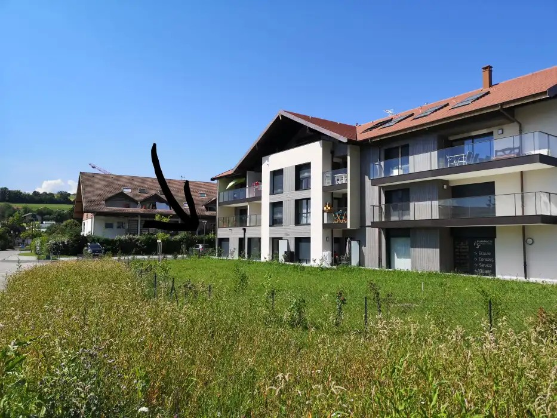

Adresse :
40 Rue de la Grenette
74370 Epagny Metz-Tessy
Cadre & Confort :
• Cabinet lumineux et climatisé
• Accessibilité PMR
• Stationnement à proximité
Réservation en ligne :
Toutes les consultations se réservent directement sur la page Doctolib du cabinet.
